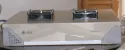
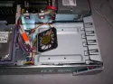
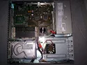
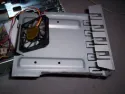

Cooling down a SUN SparcStation 5
Introduction
As the happy owner of a SparcStation 5, a SUN mid-range workstation released in 1994 and a “light” version of the SparcStation 20, I was quickly confronted with an overheating problem, notably of the 2 SCSI hard drives the machine can hold.
Indeed, in SCA80 format, the drives are stacked on top of each other in a corner of the station that is rather isolated from the conventional ventilation system.

After some research on the net, I found no solution that suited me, one of my main criteria being that I did not want to modify the machine irreversibly.Solution
It is a simple fan attached to a metal plate intended to take the place of the CD-ROM drive.
- Advantages: No modification of the station
- Simple to build with a few tools
- Aesthetics preserved (you can do cleaner than me)
- Efficient cooling
- Drawbacks:
- Removes the use of the CD-ROM
- An additional source of noise
Build
The metal plate used comes from an HP station and was used to occupy a 5¼ bay. It saved me time, because it was almost the right dimensions, but this DIY job can be done with any metal plate, provided that it can be easily sawed and above all that it does not break when bent (mine is steel, which was really not ideal in that respect).

The bracket itself is 178 mm long by 147 mm wide, and the fold of the grille gives it a height of 40 mm.
The bent part where the fan is attached was made in a vice (I made do with the means at hand) after cutting 2 notches of 20 mm with a hacksaw. It has a fairly significant angle, which depends on the dimensions of the fan.
As for the fan, it comes from a Pentium III heatsink, and measures 60×60 mm. It has the advantage of being relatively quiet, but powerful enough to ensure a significant airflow. It is screwed solidly to the plate (after drilling the necessary holes). To power it, I used an adapter that I plugged into the CD-ROM drive’s power supply.Warning: above all, do not create contacts between the black wire and the red wire when adapting the connectors. I use a very simple method for this: 2 clean solder joints, each surrounded by adhesive tape, and the whole gathered again with the same tape. You can see on the wire the part with adhesive tape protecting my solder joints.
The station once the work is finished. Rather discreet, and I think it can be done much prettier. Do not hesitate to contact me to send me your creations.
Many thanks to Zeta for his help ;)
by Cédric TESSIER on
- Advantages: No modification of the station
{kind=link}
{kind=link}
{kind=link}
{kind=link}
{kind=link}